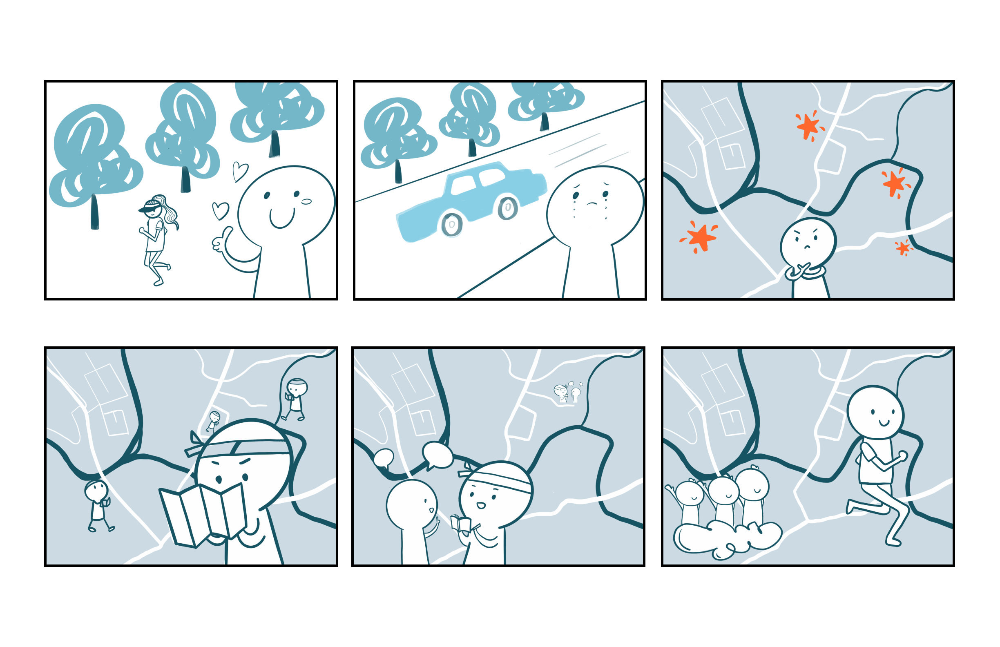
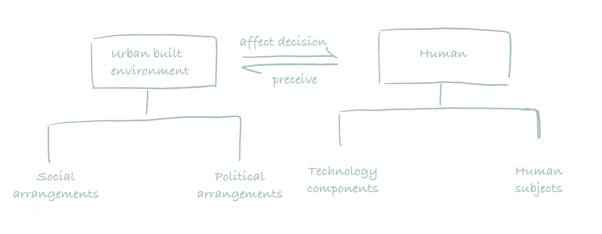
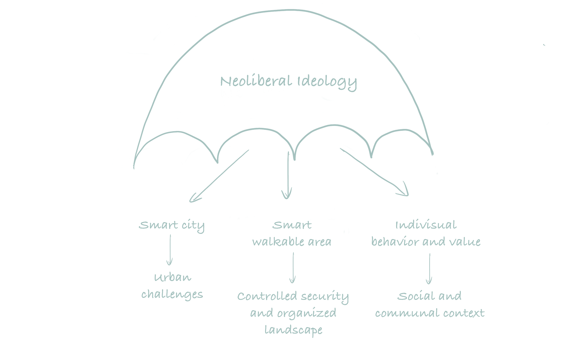
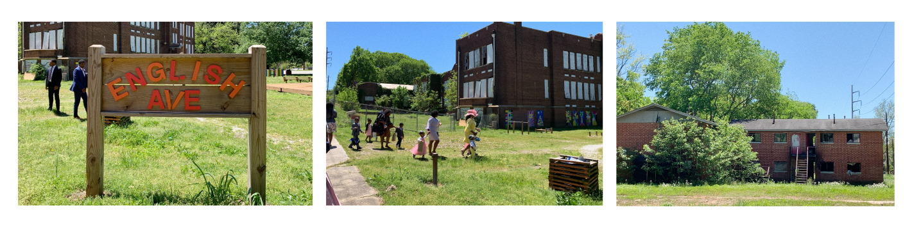
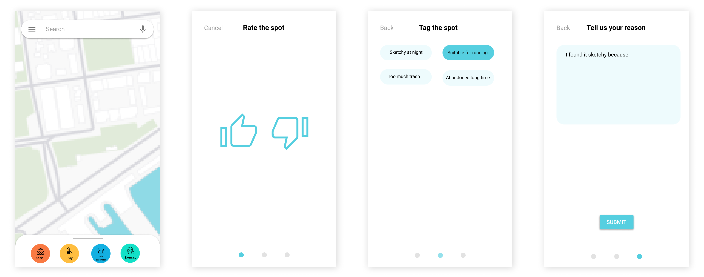

That’s what people talk about when they talk about Smart City. In the field of exercise and walkability specifically, Smart City means streets designed for walking, well-planned greening, and etc. However, this kind of Smart City is designed for residents with more resources, when the whole neighborhood is revamped to create a better living environment, it means higher cost and rent which exclude the low-income households.

To envision a Smart City where residents living there take the initiatives to build a better environment themselves, we distilled our design goals and looked for the solution through various methods.
Design Goals
Our project would like to give critique on the neoliberal ideology in smart city development; and give initiatives for mapping health and exercise “from below” by endowing the users and residents of local community the power to “translate” built environment into perceptual elements for walking, running and exercise, and to actively seek, create and share spaces for healthier alternatives in their own residential settings.
We chose English Ave neighborhood as it is a non-gentrified area adjacent to Midtown, the sharp contrast between English Ave and Midtown keeps reminding us what might work for this area.
Reflecting and learning
To explore the goals set, we delved into smart city literature, design theories and went to English Ave.
Literature critiques to see what’s working and what should be reflected
From the discussions in class and literature we reviewed, we realized that the urban built environment as infrastructure should be seen as a sociotechnical system that involves the social and political arrangements; and humans are placed in the intertwined network of the social relationship between different technological components and human subjects.


Browsing art projects to get inspired
Grabbing some keywords for the project like “from below” “ignored voice”, we searched projects to look for inspirations.


Participatory design as a possible approachs
We also delved into the possibilities of adopting the Participatory design methodology to reflect the voices from below as it is as possible.

A field study to feel the context and people
Keeping the notion of situated knowledge in mind, we went to the chosen neighborhood to further emphasize with the neighborhood and inform our design.

Design for a neighborhood to be designed by itself
With all the research, we moved to ideate the project. The solution emerged in our discussion: an interactive online map with a physical map.

This online platform could allow users to report and share their locations as their favorite place for outdoor exercises and social with others, and the routes and paths they use to reach these open spaces.
Users could reflect on their presence when they are in a certain place by creating entries, expressing emotions and perceptions, as well as reasons of presence (such as life events, habits, and surrounding communities).


The physical map would initiate the collective mapping activity which we would like to see as both the way to arrive on the collective solution of different use cases of public space and community activity which would possibly bond the community.
Limitations and future steps
Are exercise and walkability a real problem
Is a health the first priority for the community? If not, how to incorporate health and physical activity into other life essential factors?
Lack of direct user research and ethnographic work
Is the community that we imagined among the built environment the same as the community members? Do they already have ways for substantial connection, against which our way of building community might contradict?
Biased sampling
The participants of collective mapping are potentially already active members of this community? How do we stimulate the participation from those who hold negative thoughts about this area and issues in general, and make them contribute to this collective effort?